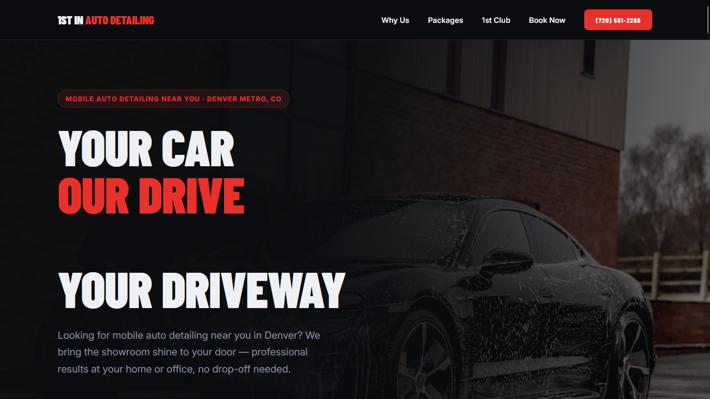
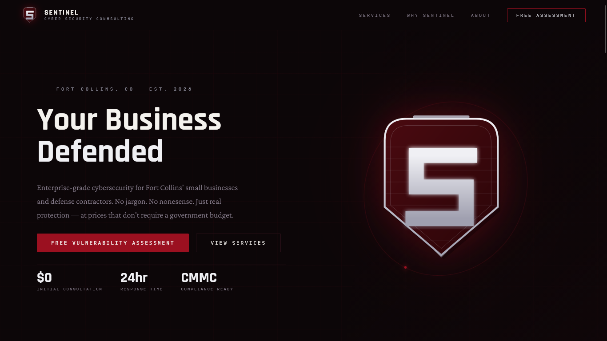

Your website should FIX problems — not just exist.
I build custom full-stack websites for small and medium sized businesses
across Northern Colorado, and remote clients globally.
Before a line of
code gets written, I sit down with you to find out what's actually problematic, not
with your current websit, your business — and build a customized site, tailored
specifically to your business that fixes your business headaches.
You already have a long list of things your business needs fixed, improved, or made more efficient. Every business does.
Every business owner carries one — in their head, or
scribbled on a legal pad,a list of pain points.
"Customers keep asking things that are already on the site."
"We lose leads because no one follows up fast enough."
"Our site looks like it's from 2014."
"We need more customers."
"We have too many calls asking the same questions."
Every business has a long list of problems that the need attention, that's just the nature of the beast. Some of these issues are the same for all businesses, others will be unique to you and you alone.
THAT is why Impress Digital Designs do things different.
Because every business, every client is unique and requires customized solutions.
I start every project with a real interview: I want to know about YOUR
business, YOUR customers, YOUR competitors,
and YOUR whole list of pain points. Then I map each one to
something the site can actually fix — before a single line of code gets written.
After all, what is a website that doesn't fix your business headaches?
It's just a static billboard. Effectively useless.
"We don't build websites — we design solutions."
Full-stack work, end to end.
From the first line of code to the server it runs on. One developer, one point of contact, no handoffs between teams.
Custom Web Design & Development
Hand-built sites — not templates. Fast, responsive, and designed around how your customers actually decide to buy.
E-Commerce
Storefronts built to reduce cart abandonment and get you paid faster.
Web Applications
Internal tools, client portals, and SaaS MVPs — built to actual spec, not a generic dashboard theme.
APIs & Integrations
Connect the tools you already run — CRM, payments, scheduling — into one working system.
Performance & SEO
Core Web Vitals, clean markup, and technical SEO so people can actually find you.
Ongoing Support & Maintenance
Monthly retainers for updates, monitoring, and small changes — so the site stays fast and current long after launch.
View some of my recent builds.
Two live sites, two very different businesses — same process behind both: interview first, then build.

1st In Auto Detailing ↗
Mobile auto detailing across the Denver metro. Built around service-area coverage, membership tiers, and a booking flow that turns "just looking" into a scheduled appointment.

Sentinel Cyber Security Consulting ↗
Cybersecurity consulting for Fort Collins SMBs and defense contractors. Tiered service pricing and CMMC-readiness messaging built to earn trust before the first call.
Four steps. No surprises.
The same process whether you're two blocks from Old Town Fort Collins or twelve time zones away.
Interview
A real conversation about your business, your customers, your competitors, and your list of pain points.
Diagnose & Design
Every pain point, if a website feature can fix it, gets mapped to a solution.
BEFORE I WRITE A SINGLE LINE OF CODE:
We discuss the solution.
You veto & approve it.
I code & build it.
Build
Full-stack development with regular check-ins — you see progress, not just a big reveal at the end.
Launch & Support
Deployed, tested, and handed off — with optional ongoing support so it keeps running well.
Straightforward packages.
Every project gets a fixed-price quote after the interview — before work starts. These are starting ranges; your quote depends on scope.
Starter Site
A professional, custom-built site for businesses that need a strong first impression online.
- Up to 5 custom pages
- Mobile-first, fully responsive
- Basic on-page SEO setup
- Contact & booking forms
- 2 rounds of revisions
Custom Build
Full custom design, CMS, and integrations for businesses ready to scale their online presence.
- Fully custom design system
- CMS for self-service editing
- Third-party integrations (CRM, booking, payments)
- Advanced SEO & analytics setup
- 30 days of post-launch support
Web App / E-Commerce
Custom web applications, e-commerce platforms, or ongoing development partnership.
- Custom application architecture
- Database & API development
- Payment processing & user accounts
- Scope-based project planning
- Optional monthly dev retainer
Based in Northern Colorado
- Fort Collins
- Loveland
- Greeley
- Windsor
- Wellington
- Longmont
- Boulder
- Cheyenne, WY
Available worldwide
"We don't build websites — we design solutions."
Pete Jenkins - Founder, Impress Digital Designs · Fort Collins, CO
Common questions.
What actually happens in the discovery interview?
We talk through your business, your ideal customer, and your competitors — then I ask you to list every friction point you can think of, big or small. That list becomes the project spec.
How long does a typical project take?
A Starter Site usually takes 2–4 weeks. Custom builds run 4–8 weeks depending on scope. Web apps and e-commerce platforms are scoped individually after the interview.
Do you work with clients outside Colorado?
Yes — most of my client base is remote. Interviews, design reviews, and handoffs all happen over video and async messaging, so location isn't a barrier.
What if I already have a site and just need it improved?
That's common. I can run the same pain-point interview against your current site, then quote fixes — a full rebuild isn't always necessary.
Do you offer ongoing maintenance after launch?
Yes. Monthly retainers cover updates, monitoring, and small feature requests — so the site stays fast and current long after it ships.
What's on your list of business pain points?
Tell me about your business and what's causing headaches. I'll reply within 24 hours with next steps — no pressure, no obligation.